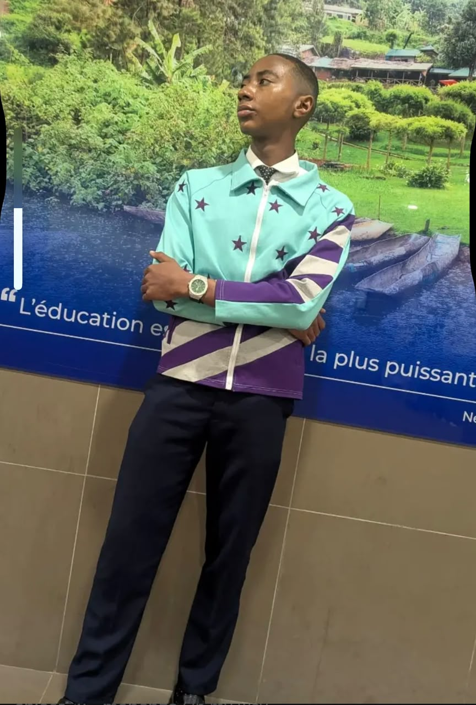

01
Management
Comprendre les structures, les processus et la coordination des activités d'une organisation.
OrganisationÉTUDIANT • FUTUR PROFESSIONNEL
Je suis Anicet Jr. Mopanzo, étudiant en management des organisations. Je m'intéresse au leadership, à la stratégie et à l'amélioration de la performance des organisations.
La discipline transforme les ambitions en résultats.

Ajoutez votre photo
Fichier : photo.jpgManagement & Leadership
01 — À PROPOS
Comprendre les organisations pour contribuer à leur évolution.
Mon parcours en management des organisations me permet de développer une compréhension progressive du fonctionnement des entreprises, de la coordination des équipes et de la prise de décision.
Je souhaite renforcer mes connaissances, participer à des projets concrets et développer une approche structurée de la résolution des problèmes.
Je considère l'apprentissage continu, la rigueur et le sens des responsabilités comme des bases essentielles de mon développement professionnel.
Retrouver mon profil LinkedIn ↗02 — MES AXES DE DÉVELOPPEMENT
Les domaines que j'étudie et que je souhaite approfondir.
Comprendre les structures, les processus et la coordination des activités d'une organisation.
OrganisationDévelopper le sens des responsabilités, la communication et la capacité à travailler en équipe.
CollaborationApprendre à analyser une situation, définir des objectifs et réfléchir aux actions à entreprendre.
AnalyseDévelopper mes compétences numériques et utiliser les outils web pour présenter des idées et des projets.
Apprentissage continu03 — MES PROJETS
Un espace évolutif pour présenter mes travaux et mes réalisations.
Création d'un site personnel en HTML, CSS et JavaScript pour présenter mon profil, mes intérêts et mes projets.
En développementTravail d'analyse portant sur la structure, la répartition des responsabilités et les processus d'une organisation.
À réaliserDéfinition d'objectifs d'apprentissage pour renforcer mes connaissances en gestion, communication et outils numériques.
À développerLes projets futurs sont identifiés comme tels : je les compléterai avec mes travaux réels au fur et à mesure de leur réalisation.
MA PHILOSOPHIE
« Peu de mots, beaucoup d'objectifs. »
Construire des compétences solides, rester curieux et progresser avec constance.
04 — CONTACT
Ouvert aux échanges professionnels, aux idées et aux opportunités d'apprentissage.
Connectons-nous et échangeons sur nos parcours.